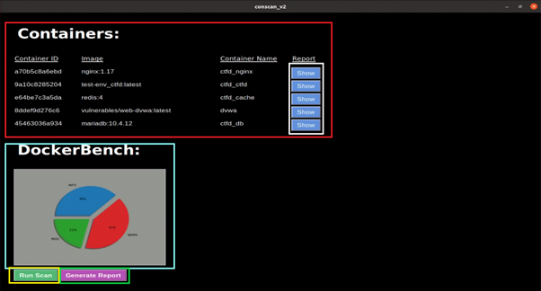
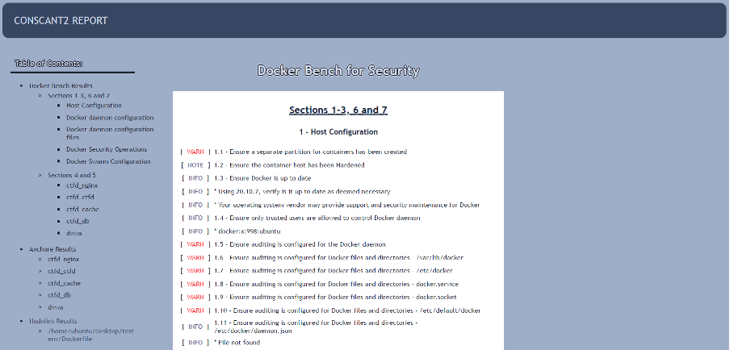

ConScan
Project Introduction:
Virtualisation provides many benefits, one of them includes the ability to consolidate many applications onto a singular system. Today, we do not need to run one application on one piece of hardware or server. However, virtualisation also provides some drawbacks and disadvantages, increased overhead in memory and higher storage footprint. The answer to these problems lies in the form of containerisation, where containers lie on top of a physical server, on their host operating system (Debian/Windows). The container connects and uses the OS kernel, with the option of using their binaries and libraries. Containers are usually megabytes in size and take seconds to start, compared to a Virtual Machine which might be gigabytes in size and take a minute to start. However, they may also come with many vulnerabilities and misconfigurations which can open and increase the attack surface for potential threat actors. Known vulnerabilities for container environments increase every year. With the increased use of containerisation in enterprises, it is essential to ensure that IT teams can use a program to identify vulnerable containers and environments so that they can configure and patch existing loopholes, and also prepare for possible zero-day exploits. The creation of a simplified user interface, coupled with container security tools that uses benchmarks from leading standards that looks out for access control exploits, image vulnerabilities, and possible network related threats is the main motivation of the project. This document will include reports on interesting security tools, and a report on a specially crafted GUI that integrates three container security tools to meet operational needs. The project was done in collaboration with 2 other members in my FYP team.
DVWA and CTFd containers and their related images are used for testing the functionality of this tool.
Comparison of container scanning/security tools:
|
Tool |
Anchore Engine |
Clair |
Docker-bench Security |
Hadolint |
Sysdig Falco |
Trivy |
|
Analysis type |
Static |
Static
|
Dynamic |
Static |
Dynamic |
Static |
|
Best practices/ CVE/CIS Benchmarks |
CVE |
CVE |
CIS Benchmarks |
Dockerfile Best Practices |
- |
CVE |
|
How it works |
Inspection, analysis, and certification of container images. |
Inspects containers layer-by-layer for known security flaws. |
Checks for dozens of common best-practices around deploying Docker containers in production. |
Parses Dockerfiles into an AST and performs rules on top of the AST. |
Detects unexpected application behavior and alerts on threats at runtime. |
Scan containers or other artifacts to detect vulnerabilities of OS packages and application dependencies. |
|
Use cases |
Pre-production vulnerability analysis and policy-based security and compliance checks. |
Pre-production analysis, vulnerability newsfeed. |
Compliance & security audit. |
Linting Dockerfile. |
Runtime alerting, forensics. |
Pre-production analysis, vulnerability newsfeed. |
From comparing security tools, the three tools chosen were Anchore Engine, Docker Bench for Security, and Hadolint. The intention was to include three different type of scans instead of having similar scans that produce congruent outputs.
Prerequisites:
- Containers to be scanned must be running
- Enough RAM (2GB minimum, 4GB recommended)
Installing Python Libraries
This application uses several python libraries to manipulate data and files. The list of libraries is (Format: {library name} ({command to install}) ):
Tkinter (pip install tk)
Pandas (pip install pandas)
numpy (pip install numpy)
matplotlib (pip install matplotlib)
screeninfo (pip install screeninfo)
subprocess (pip install subprocess)
PIL (sudo apt-get install python3-pil python3-pil.imagetk)
Architecture:
Docker is a containerisation platform, which is an OS-level virtualization method used to deploy and run distributed applications and all its dependencies together in the form of a Docker container. The containerised applications (DVWA/CTFd, DockerBench, Anchore) run on docker. However, Hadolint and the python script that our application uses runs on the operating system. The python script collects data and logs from the three security tools, processes them, and produces graphical output. The black arrows indicate what tools and containers are being used to scan the data. The three other arrows in the colours of the three tools used show that the python script runs the tools to then do the scanning of the DVWA and CTFd containers. Eventually, output from the tools will be processed by the script to output into our generated HTML file.
Output:
The scan will populate the log files with the scan output. The data used in the logs are filtered by python functions.
Different python functions are used to process and filter raw log data. Python's Matplotlib is then called and used to create graphs to be displayed on the GUI. The graphs are also saved as .png.
The figure shows an opened window displaying a simple bar graph displaying the number of CVE vulnerabilities found in the scanned nginx image.
User and Technical Documentations
User Documentation/Guide/Manual
To run the application, we need to run the python script using python3.

Now we would be presented with this screen. There are 5 sections that can be described.

Red shows the ID, Image Name, and Container Name of all currently running containers on the machine
Yellow is the “Run Scan” button. This will execute the Docker Bench, Anchore and Hadolint scans, and create the associated files where the scan data is stored within the same directory as the script itself.
Blue is the Docker Bench Graph. This is a visualisation of the scan results of Docker Bench after the scan has been done.
White are the buttons that show each Anchore Graph. Each container will have an Anchore Graph associated with it showing the amount of vulnerabilities each container has, by severity.
Green is the “Generate Report” button. This will filter through all the scan results and create a report named “report.html” in the same directory as the script. It will also open “report.html” in a browser when the button is clicked.
HTML Report generated by GREEN:

Conclusion:
This project as a whole is about containerization and how to ensure containers are secured using container security tools. Throughout this project I have learnt about what containers are and how they work, using Docker to set up and manage containers.
I have also investigated various container security tools and their functions. Through this, I discovered the ways that containers can be secured, like static scans, run-time security or even linting of certain configuration files like Dockerfiles.
After researching these technologies, I shortlisted a few tools to implement into our own container scanning tool, which I named ConscanT2. We consolidated the scan data from each of the tools and filtered through it to sort the results in a more readable way, where I can isolate what containers or images are vulnerable.